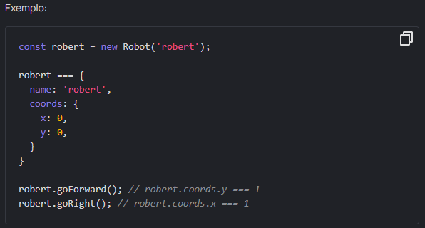

Tarefa: Robot constructor
Intro
O escritório de construção da Fábrica de Robôs Mate descobriu a possibilidade de simplificar muito mais a produção de robôs usando construtores de funções
Vamos escrever um construtor Robot que recebe um name e cria um robô com um determinado nome e 0 coordenadas. Todo o robô também deve ter acesso aos métodos de protótipo goForward, goBack, goLeft, goRight, movendo o robô 1 em um direção selecionada.
